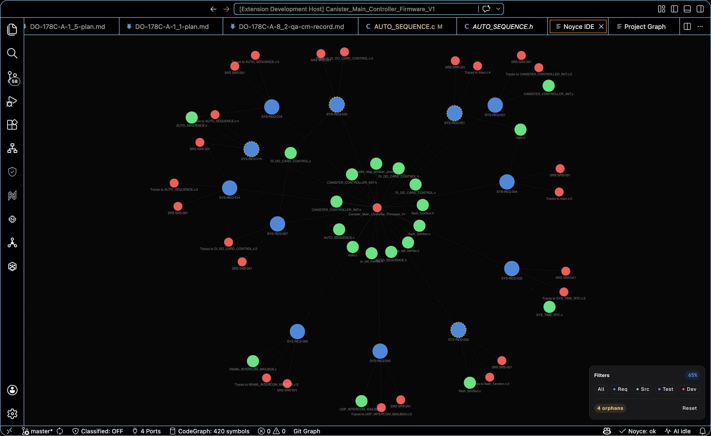

<!doctype html>
<html lang="en">
<head>
  <meta charset="UTF-8" />
  <meta name="viewport" content="width=device-width, initial-scale=1.0" />
  <meta name="theme-color" content="#000000" />
  <meta name="description" content="Noyce IDE is an AI-native Code-OSS workbench for certifiable embedded firmware. Requirements, native editing, schematic intelligence, CBMC proofs, CodeQL scans, and a hash-chained certification package live in one window." />
  <meta property="og:type" content="website" />
  <meta property="og:title" content="Noyce IDE - AI workbench for certifiable firmware." />
  <meta property="og:description" content="A Code-OSS IDE for DO-178C, ISO 26262, and MISRA teams. Twenty-six full-pane surfaces, native editing, Register Knowledge, CBMC, and offline CodeQL." />
  <meta property="og:image" content="icons_resources/icon_large.png" />
  <meta name="twitter:card" content="summary_large_image" />
  <title>Noyce IDE - AI workbench for certifiable firmware</title>

  <link rel="icon" type="image/png" sizes="512x512" href="icons_resources/icon_large.png" />
  <link rel="icon" type="image/png" sizes="32x32" href="icons_resources/icon_large.png" />
  <link rel="shortcut icon" type="image/png" href="icons_resources/icon_large.png" />
  <link rel="apple-touch-icon" sizes="180x180" href="icons_resources/icon_large.png" />

  <script src="https://unpkg.com/react@18.3.1/umd/react.development.js" integrity="sha384-hD6/rw4ppMLGNu3tX5cjIb+uRZ7UkRJ6BPkLpg4hAu/6onKUg4lLsHAs9EBPT82L" crossorigin="anonymous"></script>
  <script src="https://unpkg.com/react-dom@18.3.1/umd/react-dom.development.js" integrity="sha384-u6aeetuaXnQ38mYT8rp6sbXaQe3NL9t+IBXmnYxwkUI2Hw4bsp2Wvmx4yRQF1uAm" crossorigin="anonymous"></script>
  <script src="https://unpkg.com/@babel/standalone@7.29.0/babel.min.js" integrity="sha384-m08KidiNqLdpJqLq95G/LEi8Qvjl/xUYll3QILypMoQ65QorJ9Lvtp2RXYGBFj1y" crossorigin="anonymous"></script>
  <script src="https://cdn.tailwindcss.com"></script>
  <script src="https://unpkg.com/lucide@latest"></script>
  <style>
    @import url('https://fonts.googleapis.com/css2?family=Instrument+Serif:ital@0;1&display=swap');

    body { background-color: #000; color: #fff; margin: 0; font-family: ui-sans-serif, system-ui, sans-serif; }
    .font-instrument { font-family: 'Instrument Serif', serif; }
    .mono { font-family: ui-monospace, 'JetBrains Mono', 'SF Mono', monospace; }

    .liquid-glass {
      background: rgba(255, 255, 255, 0.01);
      background-blend-mode: luminosity;
      backdrop-filter: blur(4px);
      -webkit-backdrop-filter: blur(4px);
      border: none;
      box-shadow: inset 0 1px 1px rgba(255, 255, 255, 0.1);
      position: relative;
      overflow: hidden;
    }
    .liquid-glass::before {
      content: '';
      position: absolute;
      inset: 0;
      border-radius: inherit;
      padding: 1.4px;
      background: linear-gradient(180deg, rgba(255,255,255,0.45) 0%, rgba(255,255,255,0.15) 20%, rgba(255,255,255,0) 40%, rgba(255,255,255,0) 60%, rgba(255,255,255,0.15) 80%, rgba(255,255,255,0.45) 100%);
      -webkit-mask: linear-gradient(#fff 0 0) content-box, linear-gradient(#fff 0 0);
      -webkit-mask-composite: xor;
      mask-composite: exclude;
      pointer-events: none;
    }
    .caret { display:inline-block; width:8px; height:1em; background:#7dd3fc; margin-left:2px; vertical-align:-2px; animation: blink 1s steps(1) infinite; }
    @keyframes blink { 50% { opacity: 0; } }
  </style>
</head>
<body>
  <div id="root"></div>
  <script type="text/babel">
    const { useState, useEffect, useRef } = React;
    const EASE = 'cubic-bezier(.16,1,.3,1)';
    const REDUCE = typeof window !== 'undefined' && window.matchMedia('(prefers-reduced-motion: reduce)').matches;

    /* Inline GitHub mark — recent lucide dropped brand icons, so data-lucide="github" renders nothing */
    const GitHubIcon = ({ className }) => (
      <svg className={className} viewBox="0 0 24 24" fill="currentColor" aria-hidden="true">
        <path d="M12 .5C5.37.5 0 5.87 0 12.5c0 5.3 3.438 9.8 8.205 11.387.6.113.82-.26.82-.577 0-.285-.01-1.04-.015-2.04-3.338.724-4.042-1.61-4.042-1.61-.546-1.387-1.333-1.756-1.333-1.756-1.09-.745.083-.73.083-.73 1.205.085 1.84 1.237 1.84 1.237 1.07 1.835 2.807 1.305 3.492.998.108-.776.42-1.305.762-1.605-2.665-.303-5.467-1.332-5.467-5.93 0-1.31.468-2.38 1.235-3.22-.124-.303-.535-1.523.117-3.176 0 0 1.008-.322 3.3 1.23a11.5 11.5 0 0 1 3.003-.404c1.02.005 2.047.138 3.006.404 2.29-1.552 3.297-1.23 3.297-1.23.653 1.653.242 2.873.118 3.176.77.84 1.233 1.91 1.233 3.22 0 4.61-2.807 5.624-5.48 5.92.43.372.814 1.102.814 2.222 0 1.606-.015 2.898-.015 3.293 0 .32.216.694.825.576C20.565 22.296 24 17.797 24 12.5 24 5.87 18.627.5 12 .5Z"/>
      </svg>
    );

    /* ---------- Reveal-on-scroll (framer-motion useInView equivalent) ---------- */
    function useInView(margin) {
      const ref = useRef(null);
      const [shown, setShown] = useState(false);
      useEffect(() => {
        const el = ref.current; if (!el) return;
        if (REDUCE) { setShown(true); return; }
        const io = new IntersectionObserver(([e]) => {
          if (e.isIntersecting) { setShown(true); io.disconnect(); }
        }, { rootMargin: (margin || '-100px') + ' 0px', threshold: 0.02 });
        io.observe(el);
        return () => io.disconnect();
      }, []);
      return [ref, shown];
    }
    function Reveal({ children, y = 40, x = 0, delay = 0, dur = 0.8, className, style, as }) {
      const [ref, shown] = useInView();
      const Tag = as || 'div';
      return (
        <Tag ref={ref} className={className}
          style={{
            opacity: shown ? 1 : 0,
            transform: shown ? 'none' : `translate(${x}px, ${y}px)`,
            transition: `opacity ${dur}s ${EASE} ${delay}s, transform ${dur}s ${EASE} ${delay}s`,
            willChange: 'opacity, transform',
            ...style,
          }}>{children}</Tag>
      );
    }

    /* ---------- Hero background video (seamless crossfade loop) ---------- */
    const HeroVideo = () => {
      const videoRef = useRef(null);
      const fadeRef = useRef(null);
      const fadingOutRef = useRef(false);
      useEffect(() => {
        const video = videoRef.current; if (!video) return;
        const startFade = (target, duration, cb) => {
          if (fadeRef.current) cancelAnimationFrame(fadeRef.current);
          const start = parseFloat(video.style.opacity) || 0;
          const t0 = performance.now();
          const step = (now) => {
            const p = Math.min((now - t0) / duration, 1);
            video.style.opacity = start + (target - start) * p;
            if (p < 1) fadeRef.current = requestAnimationFrame(step); else if (cb) cb();
          };
          fadeRef.current = requestAnimationFrame(step);
        };
        const onCanPlay = () => { video.play().catch(() => {}); startFade(1, 500); };
        const onTime = () => {
          if (video.duration - video.currentTime <= 0.55 && !fadingOutRef.current) {
            fadingOutRef.current = true; startFade(0, 500);
          }
        };
        const onEnded = () => {
          video.style.opacity = '0';
          setTimeout(() => { video.currentTime = 0; video.play().catch(() => {}); fadingOutRef.current = false; startFade(1, 500); }, 100);
        };
        video.addEventListener('canplay', onCanPlay);
        video.addEventListener('timeupdate', onTime);
        video.addEventListener('ended', onEnded);
        if (video.readyState >= 3) onCanPlay();
        return () => {
          video.removeEventListener('canplay', onCanPlay);
          video.removeEventListener('timeupdate', onTime);
          video.removeEventListener('ended', onEnded);
          if (fadeRef.current) cancelAnimationFrame(fadeRef.current);
        };
      }, []);
      return (
        <div className="absolute inset-0 z-0 overflow-hidden bg-black pointer-events-none">
          <video ref={videoRef} src="web-Prototype/assets/hero.mp4" className="absolute inset-0 w-full h-full object-cover object-bottom" muted autoPlay playsInline preload="auto" style={{ opacity: 0 }} />
          <div className="absolute inset-0 bg-gradient-to-b from-black/50 via-black/20 to-black/95 pointer-events-none"></div>
        </div>
      );
    };

    /* ---------- Navbar ---------- */
    const Navbar = () => (
      <nav className="relative z-20 px-6 py-6 w-full">
        <div className="liquid-glass rounded-full px-6 py-3 flex items-center justify-between max-w-5xl mx-auto">
          <div className="flex items-center gap-8">
            <a href="#top" className="flex items-center gap-2">
              
            </a>
            <div className="hidden md:flex items-center gap-6">
              <a href="#yc" className="text-white/80 hover:text-white transition-colors text-sm font-medium">Pitch</a>
              <a href="#stack" className="text-white/80 hover:text-white transition-colors text-sm font-medium">Stack</a>
              <a href="#features" className="text-white/80 hover:text-white transition-colors text-sm font-medium">Product</a>
              <a href="#ai" className="text-white/80 hover:text-white transition-colors text-sm font-medium">AI</a>
              <a href="#proof" className="text-white/80 hover:text-white transition-colors text-sm font-medium">Proof</a>
            </div>
          </div>
          <div className="flex items-center gap-4">
            <a href="https://github.com/Hitheshkaranth/noyce_ide" className="text-white hover:text-white/80 transition-colors text-sm font-medium hidden sm:block">View on GitHub</a>
            <a href="#download" className="liquid-glass rounded-full px-6 py-2 text-white text-sm font-medium hover:bg-white/5 transition-colors">Download</a>
          </div>
        </div>
      </nav>
    );

    /* ---------- SECTION 1 · Hero ---------- */
    const Hero = () => {
      const stats = [['26 surfaces', 'each opens as its own pane'], ['Code-OSS', 'native editor, not a copy'], ['CBMC + CodeQL', 'real analysis, honest results'], ['Register Knowledge', 'manuals indexed to the page']];
      return (
        <section id="top" className="relative min-h-screen overflow-hidden flex flex-col">
          <HeroVideo />
          <Navbar />
          <div className="relative z-10 flex-1 flex flex-col items-center justify-center px-6 py-12 text-center -translate-y-[8%]">
            <span className="mono text-xs tracking-[0.25em] uppercase text-white/50 mb-6">Noyce IDE · v2.0.3</span>
            <h1 className="font-instrument text-6xl md:text-7xl lg:text-8xl xl:text-9xl text-white mb-8 tracking-tight drop-shadow-lg">
              Noyce IDE
            </h1>
            <p className="text-lg md:text-xl text-white/80 mb-3 max-w-3xl font-light">The AI-native workbench for certifiable embedded firmware.</p>
            <p className="text-sm text-white/50 mb-10 max-w-xl mx-auto leading-relaxed px-4">
              Native Code-OSS editing, schematic intelligence, CBMC proofs, CodeQL scans, and a signed certification package in one workbench.
            </p>
            <div className="flex flex-wrap items-center justify-center gap-4 mb-14">
              <a href="https://github.com/Hitheshkaranth/noyce-ide-dist/releases/tag/v2.0.3" className="bg-white text-black pl-6 pr-2 py-2 rounded-full font-medium hover:bg-white/90 transition-colors flex items-center gap-3">
                Download for macOS <span className="bg-black text-white rounded-full p-2.5 flex"><i data-lucide="arrow-right" className="w-4 h-4"></i></span>
              </a>
              <a href="https://github.com/Hitheshkaranth/noyce_ide" className="liquid-glass rounded-full px-8 py-3 text-white text-sm font-medium hover:bg-white/5 transition-colors flex items-center gap-2">
                <GitHubIcon className="w-4 h-4" /> View on GitHub
              </a>
            </div>
            <div className="grid grid-cols-2 md:grid-cols-4 gap-x-10 gap-y-6 max-w-2xl">
              {stats.map(([n, l], i) => (
                <div key={i} className="text-center">
                  <div className="font-instrument text-3xl md:text-4xl text-white">{n}</div>
                  <div className="text-white/50 text-xs mt-1">{l}</div>
                </div>
              ))}
            </div>
          </div>
          <div className="relative z-10 flex justify-center gap-4 pb-12">
            {[['github', 'https://github.com/Hitheshkaranth/noyce_ide'], ['book-open', 'https://github.com/Hitheshkaranth/noyce_ide#readme'], ['globe', 'https://hitheshkaranth.github.io/noyce-ide-dist/']].map(([ico, href], i) => (
              <a key={i} href={href} className="liquid-glass rounded-full p-4 text-white/80 hover:text-white hover:bg-white/5 transition-all">
                {ico === 'github' ? <GitHubIcon className="w-5 h-5" /> : <i data-lucide={ico} className="w-5 h-5"></i>}
              </a>
            ))}
          </div>
        </section>
      );
    };

    /* ---------- SECTION 2 · About ---------- */
    const About = () => (
      <section className="relative bg-black pt-32 md:pt-44 pb-10 md:pb-14 px-6 overflow-hidden">
        <div className="absolute inset-0 bg-[radial-gradient(ellipse_at_top,_rgba(255,255,255,0.03)_0%,_transparent_70%)] pointer-events-none"></div>
        <div className="relative max-w-6xl mx-auto">
          <Reveal y={20} dur={0.6}><span className="text-white/40 text-sm tracking-[0.25em] uppercase">About Noyce</span></Reveal>
          <Reveal y={40} delay={0.1} dur={0.8}>
            <h2 className="font-instrument text-4xl md:text-6xl lg:text-7xl text-white leading-[1.1] tracking-tight mt-6">
              Firmware teams should not need a spreadsheet, a compliance portal, a pin tool, and a chatbot<br className="hidden md:block" />
              <span className="italic text-white/60">to prove what their code already does.</span>
            </h2>
          </Reveal>
          <Reveal y={20} delay={0.2} dur={0.7}>
            <p className="mt-8 text-white/50 text-base md:text-lg max-w-3xl leading-relaxed">
              Noyce is a Code-OSS Electron workbench with a Rust sidecar. It imports real vendor projects, runs real CBMC and CodeQL, indexes vendor PDFs, and writes a tamper-evident certification package. AI is a specialist pipeline over that graph, not a chat overlay.
            </p>
          </Reveal>
        </div>
      </section>
    );

    /* ---------- SECTION 3 · Featured video ---------- */
    const Featured = () => (
      <section className="bg-black pt-6 md:pt-10 pb-20 md:pb-32 px-6 overflow-hidden">
        <div className="max-w-6xl mx-auto">
          <Reveal y={60} dur={0.9} className="relative rounded-3xl overflow-hidden liquid-glass">
            <div className="relative aspect-video">
              <video src="web-Prototype/assets/featured.mp4" className="w-full h-full object-cover" muted autoPlay loop playsInline preload="auto" />
              <div className="absolute inset-0 bg-gradient-to-t from-black/70 via-transparent to-transparent pointer-events-none"></div>
            </div>
            {/* Overlay on desktop; stacks below the video on mobile so text is never clipped */}
            <div className="p-6 md:p-10 md:absolute md:bottom-0 md:left-0 md:right-0 flex flex-col md:flex-row md:items-end md:justify-between gap-6">
              <div className="liquid-glass rounded-2xl p-6 md:p-8 max-w-md">
                <div className="text-white/50 text-xs tracking-[0.25em] uppercase mb-3">Our Approach</div>
                <p className="text-white text-sm md:text-base leading-relaxed">
                  Click a tool and it opens as itself, full pane. Code viewing is Code-OSS. Analysis surfaces (Register Knowledge, CBMC, CodeQL) report what they measured on the loaded firmware, including empty results.
                </p>
              </div>
              <a href="#features" className="liquid-glass rounded-full px-8 py-3 text-white text-sm font-medium hover:bg-white/5 transition-colors self-start md:self-auto">Explore features</a>
            </div>
          </Reveal>
        </div>
      </section>
    );

    /* ---------- SECTION 4 · Features (Noyce Core) ---------- */
    const Features = () => {
      const features = [
        { icon: 'shield-check', title: 'Certification evidence, packaged', desc: 'DO-178C Table A, MISRA, MC/DC, reviews, and the hash-chained audit ledger assemble into a signed HTML + JSON Certification Evidence Package whose SHA-256 is anchored to the trail head.' },
        { icon: 'check-circle', title: 'Formal proofs and code scanning', desc: 'Run CBMC over the project harness for array-bounds, overflow, and assertions. Drive the real CodeQL CLI offline from vendored query packs, then walk SARIF data-flow and apply an AI remediation patch.' },
        { icon: 'book-open', title: 'The part’s manual, indexed', desc: 'Register Knowledge fetches the vendor PDF, indexes it, and cites the page: the TI SPMS433 datasheet yields 876 registers, 654 with bit fields, and 592 rules. Link code to the places the firmware touches them.' },
        { icon: 'circuit-board', title: 'Schematic intelligence', desc: 'Open the board PDF. LiteParse and PaddleOCR make the drawing searchable, parse an auto-BoM (1,674 text items to 222 parts on the canister controller), and infer a component graph from shared nets.' },
        { icon: 'layout-panel-left', title: 'Every tile opens as itself', desc: 'The launcher has 26 surfaces. Clicking Traceability Graph used to dock a strip beside an empty editor. Each tile now fills the pane, so the graph sits at 65% instead of 21% and labels stay readable.' },
        { icon: 'code', title: 'Code viewing is Code-OSS', desc: 'The webview Monaco copy is gone. Open from MISRA or CodeQL lands in the host editor at the line, so explorer, tabs, git decorations, and language services stay in charge. Markdown and PDFs still use their viewers.' },
      ];
      const surfaces = ['Editor', 'Semantic Search', 'Requirements', 'Traceability', 'MISRA', 'CBMC', 'CodeQL', 'Test Explorer', 'Compliance', 'DC/CC', 'MC/DC', 'DO-178C Documents', 'Cyber Assurance', 'Audit Trail', 'Architecture', 'Project Graph', 'Schematic + BoM', 'Register Knowledge', 'Register Inspector', 'Fault Analyzer', 'Peripheral Registers', 'Signal Viewer', 'Serial Monitor', 'Build Pipeline', 'Pin Configurator', 'Quality Trend'];
      const engines = [
        { k: 'CBMC', v: 'Dispatches the real bounded model checker over the project harness. Properties table, step-by-step counterexample, AI failure explanation. Captured run: CBMC 6.9.0, 70/70 discharged on rs485_resp_phraser_proof.c.' },
        { k: 'CodeQL', v: 'Drives the CodeQL CLI to SARIF. Vendored bundle ships query packs (npm run codeql:bootstrap). --download only when CodeQL came from PATH, so older CLIs are not broken by a registry digest field. Walks data-flow; can apply a structured remediation patch.' },
        { k: 'MC/DC + DC/CC', v: 'Extracts if/while/for/ternary decisions, splits atomic conditions, computes statement/decision/MC/DC obligations (433 decisions, 116 conditions, 160 independence vectors on the canister firmware). Coupling from call edges and shared-data access for DO-178C A-7 obj 8.' },
        { k: 'Schematic', v: 'Host LiteParse + PaddleOCR PP-OCRv5; in-webview pdf.js + Tesseract fallback. Positioned text, class-aware BoM, inferred net graph from shared labels (not a parsed netlist). 1,674 text items to 222 parts, 758 links, 95 nets.' },
        { k: 'Register Knowledge', v: 'Detects the MCU, fetches the vendor PDF, sets pdf.js workerSrc so Electron can parse it (1,892-page SPMS433 in ~2.2s under node). 876 registers, 654 bit fields, 592 rules, each page-cited. Link code to MMIO sites. Choose PDF for unpublished manuals.' },
        { k: 'Architecture', v: 'Swark-style pipeline: source to Gemma to Mermaid, then a Structurizr-style C4 view (Context / Containers / Components / Code / Data-flow / Embedded). Export HLD, DSL, Draw.io, SVG, PNG, PDF. 24 files, 95 functions, 3 subsystems, 116 relationships on the loaded firmware.' },
      ];
      return (
        <section id="features" className="bg-black py-24 md:py-32 px-6 overflow-hidden">
          <div className="max-w-6xl mx-auto">
            <Reveal y={30} dur={0.7} className="mb-14">
              <span className="text-white/40 text-sm tracking-[0.25em] uppercase">Noyce Core</span>
              <h2 className="font-instrument text-4xl md:text-6xl text-white tracking-tight mt-3">One workspace for source,<br className="hidden md:block" /> evidence, and silicon.</h2>
              <p className="text-white/50 text-sm max-w-2xl mt-4">Noyce extends Code-OSS with 26 first-class surfaces. Generated artifacts stay under <span className="mono text-white/70">.noyce/</span>, so the firmware you opened stays git-clean.</p>
            </Reveal>
            <div className="grid grid-cols-1 md:grid-cols-2 gap-x-10 gap-y-8 mb-14">
              {features.map((f, i) => (
                <Reveal key={i} y={40} delay={(i % 2) * 0.08} dur={0.7} className="flex gap-4">
                  <div className="text-sky-300/90 mt-0.5 shrink-0"><i data-lucide={f.icon} className="w-5 h-5"></i></div>
                  <div>
                    <h3 className="text-base font-semibold text-white mb-1.5">{f.title}</h3>
                    <p className="text-white/60 text-sm leading-relaxed">{f.desc}</p>
                  </div>
                </Reveal>
              ))}
            </div>
            <Reveal y={20} dur={0.6} className="flex flex-wrap gap-2 mb-16">
              {surfaces.map((s) => (
                <span key={s} className="mono text-[11px] text-white/55 border border-white/10 rounded-full px-3 py-1">{s}</span>
              ))}
            </Reveal>
            <div className="grid grid-cols-1 md:grid-cols-2 gap-x-12 gap-y-10">
              {engines.map((e) => (
                <Reveal key={e.k} y={24} dur={0.6}>
                  <div className="mono text-[11px] text-sky-300/80 uppercase tracking-wider mb-2">{e.k}</div>
                  <p className="text-white/60 text-sm leading-relaxed">{e.v}</p>
                </Reveal>
              ))}
            </div>
          </div>
        </section>
      );
    };

    /* ---------- SECTION 3B · YC Snapshot ---------- */
    const YCSnapshot = () => {
      const points = [
        { label: 'Problem', body: 'Certifiable firmware is still built across a vendor IDE, a pin tool, two static analyzers, a requirements manager, a traceability spreadsheet, a CI dashboard, and a generic AI chat. Every hop drops context the auditor later asks for.' },
        { label: 'Solution', body: 'One Code-OSS window: 26 full-pane surfaces, native editing, Register Knowledge, schematic BoM, CBMC, offline CodeQL, MISRA, MC/DC, coupling, and a SHA-256-anchored certification package written under .noyce/ so the project stays git-clean.' },
        { label: 'Customer', body: 'Aerospace, automotive, medical, industrial, robotics, and defense firmware teams that must produce DO-178C / ISO 26262 / MISRA evidence before they can ship or raise the next round of hardware.' },
        { label: 'Why now', body: 'Models can finally read a workspace, but regulated teams cannot put an unaudited chatbot in the loop. The product that wins is editor-native, local-capable, and every AI action is signed onto the same graph as the code.' },
        { label: 'Wedge', body: 'Start as the IDE they already know (Code-OSS), not a new portal. Expand from editor-native compliance into the operating system for safety-critical software delivery: evidence, hardware, CI, and agents on one thread.' },
        { label: 'Moat', body: 'Real CLIs and parsers, not screenshots of them. CBMC, CodeQL, LiteParse, PaddleOCR, CMSIS-SVD, STM32 .ioc / CCS / MPLAB importers, a 755-tool catalog, and a hash-chained ledger. That stack is hard to fake and harder to leave.' },
      ];
      return (
        <section id="yc" className="bg-black py-20 md:py-28 px-6 border-t border-white/5 overflow-hidden">
          <div className="max-w-6xl mx-auto">
            <Reveal y={30} dur={0.7} className="mb-12 max-w-3xl">
              <h2 className="font-instrument text-4xl md:text-6xl text-white tracking-tight mb-5">A developer platform for regulated firmware teams.</h2>
              <p className="text-white/55 text-sm md:text-base leading-relaxed">
                Make embedded engineers faster without breaking certification discipline. Diligence can run the installer, open a Tiva or STM32 project, and see CBMC, CodeQL, and the audit trail report what they measured.
              </p>
            </Reveal>
            <div className="grid grid-cols-1 sm:grid-cols-2 lg:grid-cols-3 gap-px bg-white/10">
              {points.map((p) => (
                <div key={p.label} className="bg-black p-6 md:p-7">
                  <div className="mono text-[11px] text-sky-300/80 uppercase tracking-wider mb-3">{p.label}</div>
                  <p className="text-white/70 text-sm leading-relaxed">{p.body}</p>
                </div>
              ))}
            </div>
          </div>
        </section>
      );
    };

    const Stack = () => {
      const layers = [
        { k: 'Shell', v: 'Pinned Code-OSS + Electron. product.json overlay, rebrand patch, 11 first-party VS Code extensions (core-ui, stm32, fpga, telemetry, compliance, hardware, lifecycle, project-graph, architecture, agents, chat).' },
        { k: 'Workbench', v: 'React 18 + TypeScript 5.6 + Vite 5 + Tailwind. Density-responsive surfaces. Native editor for code; Milkdown for Markdown; schematic viewer for PDFs. Open from findings uses vscode.open at the line.' },
        { k: 'Sidecar', v: 'Rust (tokio, serialport, probe-rs, walkdir) over JSON-RPC stdio. Workspace IO, .ioc / CCS / MPLAB / Tiva importers, MISRA scanners, CBMC dispatch, serial and JTAG enumeration.' },
        { k: 'Isolation', v: 'All generated evidence, docs, CodeQL scratch, and schematic analysis land in <project>/.noyce/ with its own gitignore. The firmware tree is never rewritten. Host-side LiteParse + PaddleOCR and CodeQL run through the extension host and clean up.' },
      ];
      const loop = [
        { t: 'Import', d: 'Open STM32CubeIDE .ioc, TI TivaWare / Code Composer, MPLAB X, or a generic folder. Pin maps, SVD, and the MCU identity come from the project files, not a form.' },
        { t: 'Index', d: 'Local nomic-embedding RAG over code and requirements. Project graph of functions, files, macros. Semantic search and agents share that index.' },
        { t: 'Prove', d: 'CBMC on the harness. CodeQL security-extended from vendored packs (offline). MC/DC and data/control coupling from the AST and call graph. MISRA via cppcheck, clang-tidy, and the 755-tool catalog.' },
        { t: 'Package', d: 'Specialist agents fill DO-178C Table A artifacts. The Certification Evidence Package is signed HTML + JSON whose SHA-256 is anchored to the hash-chained audit head.' },
      ];
      return (
        <section id="stack" className="bg-black py-24 md:py-32 px-6 border-t border-white/5 overflow-hidden">
          <div className="max-w-6xl mx-auto">
            <Reveal y={30} dur={0.7} className="mb-14">
              <h2 className="font-instrument text-4xl md:text-6xl text-white tracking-tight mb-4">What it is, mechanically.</h2>
              <p className="text-white/50 text-sm max-w-2xl leading-relaxed">A single Electron process tree. Noyce-owned config stays out of the vendored Code-OSS checkout (scripts/lib/codeoss-pin.json pins upstream commit and Node). That is how the product stays reproducible without forking VS Code into sludge.</p>
            </Reveal>
            <div className="grid grid-cols-1 lg:grid-cols-2 gap-10 lg:gap-16 mb-20">
              <div className="flex flex-col gap-8">
                {layers.map((row) => (
                  <Reveal key={row.k} y={24} dur={0.6} className="grid grid-cols-[7rem_1fr] gap-4 items-start">
                    <div className="mono text-[11px] text-sky-300/80 uppercase tracking-wider pt-1">{row.k}</div>
                    <p className="text-white/65 text-sm leading-relaxed">{row.v}</p>
                  </Reveal>
                ))}
              </div>
              <Reveal y={30} dur={0.8} className="liquid-glass rounded-2xl p-6 md:p-8 mono text-[12px] leading-7 text-white/70">
                <div className="text-white/30 mb-3">noyce-ide/</div>
                <div>Code-OSS desktop shell</div>
                <div className="pl-4 text-white/50">product.json overlay + 11 extensions</div>
                <div className="mt-3">React workbench (src/)</div>
                <div className="pl-4 text-white/50">compliance · hardware · AI · graphs</div>
                <div className="mt-3">services/noyce-core (Rust)</div>
                <div className="pl-4 text-white/50">JSON-RPC · import · scan · CBMC · serial</div>
                <div className="mt-3">.noyce/ working dir</div>
                <div className="pl-4 text-white/50">evidence · audit · CodeQL scratch</div>
              </Reveal>
            </div>
            <div className="grid grid-cols-1 md:grid-cols-2 gap-x-12 gap-y-10">
              {loop.map((s) => (
                <Reveal key={s.t} y={24} dur={0.6}>
                  <h3 className="text-white font-semibold text-lg mb-2">{s.t}</h3>
                  <p className="text-white/60 text-sm leading-relaxed">{s.d}</p>
                </Reveal>
              ))}
            </div>
          </div>
        </section>
      );
    };

    /* ---------- SECTION 5 · AI Agents ---------- */
    const AGENTS = [
      { name: 'System Designer', role: 'SRS / SDD', ico: 'compass', body: 'Routes DO-178C design objectives. Turns a high-level requirement into low-level design items, interfaces, and traceability stubs that land in the requirements register and the orchestrator kanban.', cmd: 'noyce decompose REQ-014 --target tm4c1294' },
      { name: 'Software Engineer', role: 'implement', ico: 'code', body: 'Drafts against SVD, HAL, and the indexed register manual. Fixed-point and ISR-aware. @req / @verification annotations resolve against the register so the editor stays the source of trace.', cmd: 'noyce impl LLR-072 --hal tiva --misra' },
      { name: 'Test Engineer', role: 'MC/DC · HIL', ico: 'flask-conical', body: 'Generates coverage tests and HIL scripts, then links each artifact to the originating requirement. The MC/DC view stays at 0% until those links exist.', cmd: 'noyce verify TST-204 --mcdc --hil' },
      { name: 'Code Reviewer', role: 'MISRA cited', ico: 'search-check', body: 'Every comment cites a rule (MISRA C:2025 15.5 single-exit, and so on). Structural auto-fix routes to a function-level refactor agent and applies on the host.', cmd: 'noyce review --rule 15.5 --explain' },
      { name: 'Doc Generator', role: 'DOCX plans', ico: 'file-text', body: 'Writes SDP, SDD, SVP, and review records as print-ready .docx from the live workspace. Section numbers and deviations stay linked to the graph.', cmd: 'noyce doc SDP --section 4.2 --sign' },
      { name: 'Traceability Monitor', role: 'hash chain', ico: 'git-fork', body: 'Maintains REQ to Design to Code to Test. Completions, reviews, and approvals append to the immutable audit ledger (actor, action, timestamp, per-entry SHA). Orphans fail the merge gate.', cmd: 'noyce trace --audit --fail-on-orphan' },
    ];
    const Agents = () => {
      const [active, setActive] = useState(0);
      const [typed, setTyped] = useState('');
      const a = AGENTS[active];
      useEffect(() => {
        setTyped(''); if (REDUCE) { setTyped(a.cmd); return; }
        let i = 0; const id = setInterval(() => { i++; setTyped(a.cmd.slice(0, i)); if (i >= a.cmd.length) clearInterval(id); }, 26);
        return () => clearInterval(id);
      }, [active]);
      useEffect(() => { if (window.lucide) window.lucide.createIcons(); }, [active]);
      return (
        <section id="ai" className="bg-black py-24 md:py-32 px-6 border-t border-white/5 overflow-hidden">
          <div className="max-w-6xl mx-auto">
            <Reveal y={30} dur={0.7} className="text-center mb-14">
              <span className="text-white/40 text-sm tracking-[0.25em] uppercase">Noyce Agents</span>
              <h2 className="font-instrument text-4xl md:text-6xl text-white tracking-tight mt-3 mb-4">Six specialist agents,<br className="hidden md:block" /> one auditable thread.</h2>
              <p className="text-white/50 max-w-2xl mx-auto text-sm">Each persona has its own model provider (Gemini, Anthropic, OpenAI, Ollama, LM Studio, Codex CLI, Claude CLI). Compliance objectives sync into the kanban. Completions are hash-chained. The same nomic-embedding index that powers Semantic Search grounds the agents.</p>
            </Reveal>
            <div className="grid grid-cols-1 lg:grid-cols-5 gap-6 items-start">
              <div className="lg:col-span-2 flex flex-col gap-2">
                {AGENTS.map((ag, i) => (
                  <button key={ag.name} onClick={() => setActive(i)} onMouseEnter={() => setActive(i)}
                    className={'liquid-glass rounded-xl px-5 py-4 flex items-center gap-4 text-left transition-colors ' + (active === i ? 'bg-white/[0.04]' : 'hover:bg-white/[0.02]')}>
                    <span className={'w-9 h-9 rounded-lg grid place-items-center shrink-0 ' + (active === i ? 'text-sky-300 bg-sky-300/10' : 'text-white/70')}><i data-lucide={ag.ico} className="w-5 h-5"></i></span>
                    <span><span className="block text-sm font-semibold text-white">{ag.name}</span><span className="block text-xs text-white/40">{ag.role}</span></span>
                  </button>
                ))}
              </div>
              <div className="lg:col-span-3 liquid-glass rounded-2xl p-8">
                <div className="flex items-center gap-4 mb-5">
                  <span className="w-12 h-12 rounded-xl grid place-items-center bg-sky-300/10 text-sky-300"><i data-lucide={a.ico} className="w-6 h-6"></i></span>
                  <div><h3 className="text-xl font-semibold text-white">{a.name}</h3><div className="text-xs text-white/40 uppercase tracking-wider">{a.role}</div></div>
                </div>
                <p className="text-white/70 leading-relaxed mb-6">{a.body}</p>
                <div className="mono text-sm text-sky-300 bg-black/50 border border-white/10 rounded-lg px-4 py-3"><span className="text-white/40">$ </span>{typed}<span className="caret"></span></div>
              </div>
            </div>
          </div>
        </section>
      );
    };

    /* ---------- SECTION 6 · Hardware × Software (philosophy layout) ---------- */
    const Philosophy = () => (
      <section id="hardware" className="bg-black py-28 md:py-40 px-6 overflow-hidden">
        <div className="max-w-6xl mx-auto">
          <Reveal y={40} dur={0.8}>
            <h2 className="font-instrument text-5xl md:text-7xl lg:text-8xl text-white tracking-tight mb-16 md:mb-24">Silicon <span className="italic text-white/40">×</span> Software.</h2>
          </Reveal>
          <div className="grid grid-cols-1 md:grid-cols-2 gap-8 md:gap-12">
            <Reveal x={-40} y={0} dur={0.9} className="rounded-3xl overflow-hidden aspect-[4/3] liquid-glass">
              <video src="web-Prototype/assets/philosophy.mp4" className="w-full h-full object-cover" muted autoPlay loop playsInline preload="auto" />
            </Reveal>
            <Reveal x={40} y={0} dur={0.9}>
              <p className="text-white/70 text-base md:text-lg leading-relaxed">Pin maps from STM32CubeMX <span className="mono text-white/80">.ioc</span> files, SVD registers, a Cortex-M CFSR decoder, and GNU ld memory maps. Register Knowledge indexes the vendor manual so a claim about <span className="mono text-white/80">STCTRL</span> cites page 150 of SPMS433, not a handwritten table.</p>
              <div className="w-full h-px bg-white/10 my-8"></div>
              <p className="text-white/70 text-base md:text-lg leading-relaxed">The schematic viewer pans and zooms the board PDF, then Analyze builds a class-aware BoM and an inferred net graph. Importers cover STM32CubeIDE, TI Tiva / Code Composer, MPLAB X, and a generic folder.</p>
              <div className="flex flex-wrap gap-2 mt-8">
                {['STM32', 'TI Tiva / CCS', 'PIC32 / MPLAB', 'RP2040', 'i.MX RT', 'Cortex-M'].map((t) => (
                  <span key={t} className="mono text-xs text-sky-300/90 border border-sky-300/20 bg-sky-300/[0.04] rounded-full px-3 py-1">{t}</span>
                ))}
              </div>
            </Reveal>
          </div>
        </div>
      </section>
    );

    /* ---------- SECTION 7 · Compliance / Traceability metrics ---------- */
    const Proof = () => {
      const groups = [
        {
          h: 'Project loaded',
          rows: [
            ['Target', 'TI Tiva TM4C1294NCPDT, Canister Main Controller, imported from source'],
            ['Editor', 'Native Code-OSS with @req / @verification, MISRA diagnostics, code-lens agents'],
            ['Graph', '160 symbols, 95 functions, 24 files, 40 macros, 325 links, rooted at main'],
          ],
        },
        {
          h: 'Verification that ran',
          rows: [
            ['CBMC 6.9.0', '70 properties, 70 proved, 0 failed, 0 unknown'],
            ['CodeQL', 'security-extended, --build-mode=none, 0 alerts (reported, not sampled)'],
            ['MC/DC', '433 decisions, 116 conditions, 160 independence vectors, 0% until tests link'],
            ['Coupling', '24 components, 17 control pairs, 59 data pairs, 76 uncovered until evidence links'],
          ],
        },
        {
          h: 'Hardware recovered',
          rows: [
            ['Register Knowledge', 'SPMS433, 1,892 pages, 876 registers, 654 bit fields, 592 rules'],
            ['Schematic Analyze', '1,674 text items, 222 parts, Capacitor x79 and the rest class-grouped'],
            ['Component graph', '222 parts, 758 links, 95 nets inferred from layout'],
            ['Architecture', 'C4: 3 subsystems, 116 relationships, 12 types'],
          ],
        },
        {
          h: 'What diligence can check',
          rows: [
            ['Honesty', 'Empty and unsupported views name the linker or pack they found'],
            ['Isolation', 'Evidence under .noyce/; project .gitignore untouched'],
            ['Repro', 'qc:capture screenshots all 26 surfaces from the running Code-OSS build'],
            ['CI', 'Playwright smoke on every push to main; Windows signed installer on tag v*'],
          ],
        },
      ];
      return (
        <section id="proof" className="bg-black py-24 md:py-32 px-6 border-t border-white/5 overflow-hidden">
          <div className="max-w-6xl mx-auto">
            <Reveal y={30} dur={0.7} className="mb-14 max-w-3xl">
              <h2 className="font-instrument text-4xl md:text-6xl text-white tracking-tight mb-4">Measured on real firmware, not a demo dataset.</h2>
              <p className="text-white/50 text-sm leading-relaxed">Every figure below is from the running 2.0.3 Code-OSS build with the office Canister Main Controller project loaded, after the analysis had finished. That is the diligence artifact: install, open firmware, read the same numbers.</p>
            </Reveal>
            <div className="grid grid-cols-1 md:grid-cols-2 gap-12 md:gap-16">
              {groups.map((g) => (
                <Reveal key={g.h} y={24} dur={0.6}>
                  <h3 className="text-white font-semibold mb-5">{g.h}</h3>
                  <div className="flex flex-col gap-4">
                    {g.rows.map(([k, v]) => (
                      <div key={k}>
                        <div className="mono text-[11px] text-sky-300/80 uppercase tracking-wider mb-1">{k}</div>
                        <p className="text-white/65 text-sm leading-relaxed">{v}</p>
                      </div>
                    ))}
                  </div>
                </Reveal>
              ))}
            </div>
          </div>
        </section>
      );
    };

    const Compliance = () => {
      const metrics = [['876', 'registers indexed from the TI SPMS433 manual'], ['70/70', 'CBMC properties discharged on the firmware harness'], ['222', 'schematic parts parsed into an auto-BoM'], ['SHA-256', 'certification package anchored to the audit trail']];
      return (
        <section id="compliance" className="bg-black py-24 md:py-32 px-6 border-t border-white/5 overflow-hidden">
          <div className="max-w-5xl mx-auto text-center">
            <Reveal y={30} dur={0.7}>
              <h2 className="font-instrument text-4xl md:text-6xl text-white tracking-tight mb-4">REQ to Design to Test, kept honest.</h2>
              <p className="text-white/50 max-w-2xl mx-auto text-sm mb-12">Numbers below are from the Canister Main Controller firmware in the running Code-OSS build, after analysis had finished. Empty or unsupported views say so.</p>
            </Reveal>
            <Reveal y={50} dur={0.9} className="liquid-glass rounded-2xl p-3 mb-12">
              <div className="rounded-xl overflow-hidden border border-white/10 bg-black/50">
                
              </div>
            </Reveal>
            <div className="grid grid-cols-2 md:grid-cols-4 gap-4">
              {metrics.map(([n, l], i) => (
                <Reveal key={i} y={40} delay={i * 0.08} dur={0.7} className="liquid-glass rounded-xl p-5">
                  <div className="font-instrument text-3xl md:text-4xl text-white">{n}</div>
                  <div className="text-white/50 text-xs mt-1 leading-snug">{l}</div>
                </Reveal>
              ))}
            </div>
          </div>
        </section>
      );
    };

    /* ---------- SECTION 8 · What we do (services cards) ---------- */
    const Services = () => {
      const cards = [
        { video: 'web-Prototype/assets/strategy.mp4', tag: 'Compliance', title: 'Evidence and Certification', desc: 'Live DO-178C Table A from the project. Each objective routes to a specialist agent. One click builds a signed HTML + JSON package whose SHA-256 is the audit-trail head. Jama / generic ALM for the requirement register. Print-ready .docx plans and records.' },
        { video: 'web-Prototype/assets/craft.mp4', tag: 'Verification', title: 'CBMC, CodeQL, catalog', desc: 'Real CBMC bounded model checking. Real CodeQL CLI, offline packs. Vendored analysis-tools-dev (755 tools), executable subset cppcheck, clang-tidy, ESLint, Ruff, ShellCheck. Cyber Assurance is a real-source SBOM with OSV CVE lookup.' },
      ];
      return (
        <section className="relative bg-black py-28 md:py-40 px-6 overflow-hidden">
          <div className="absolute inset-0 bg-[radial-gradient(ellipse_at_center,_rgba(255,255,255,0.02)_0%,_transparent_60%)] pointer-events-none"></div>
          <div className="relative max-w-6xl mx-auto">
            <Reveal y={30} dur={0.7} className="flex items-end justify-between mb-12">
              <h2 className="font-instrument text-3xl md:text-5xl text-white tracking-tight">Certification and verification, as engines.</h2>
            </Reveal>
            <div className="grid grid-cols-1 md:grid-cols-2 gap-6 md:gap-8">
              {cards.map((c, i) => (
                <Reveal key={i} y={50} delay={i * 0.15} dur={0.8} className="liquid-glass rounded-3xl overflow-hidden group">
                  <div className="relative aspect-video overflow-hidden">
                    <video src={c.video} className="w-full h-full object-cover transition-transform duration-700 group-hover:scale-105" muted autoPlay loop playsInline preload="auto" />
                    <div className="absolute inset-0 bg-gradient-to-t from-black/40 to-transparent pointer-events-none"></div>
                  </div>
                  <div className="p-6 md:p-8">
                    <div className="flex items-center justify-between mb-3">
                      <span className="text-white/40 text-xs tracking-[0.25em] uppercase">{c.tag}</span>
                      <span className="liquid-glass rounded-full p-2 text-white/80"><i data-lucide="arrow-up-right" className="w-4 h-4"></i></span>
                    </div>
                    <h3 className="text-white text-xl md:text-2xl mb-3 tracking-tight font-semibold">{c.title}</h3>
                    <p className="text-white/50 text-sm leading-relaxed">{c.desc}</p>
                  </div>
                </Reveal>
              ))}
            </div>
          </div>
        </section>
      );
    };

    const Release203 = () => {
      const hero = { label: 'Traceability graph', title: 'Every launcher tile opens its own surface, fitted so requirement, source, and test labels are readable without zooming.', src: 'docs/screenshots/2.0.3/traceability-full-pane.png' };
      const shots = [
        { label: 'Register Knowledge', title: 'TI SPMS433: 1,892 pages indexed to 876 registers, 654 with bit fields, 592 rules.', src: 'docs/screenshots/2.0.3/register-knowledge-indexed.png' },
        { label: 'Formal verification', title: 'CBMC 6.9.0 over the firmware harness: 70 properties, all proved.', src: 'docs/screenshots/2.0.3/formal-verification-run.png' },
        { label: 'Code scanning', title: 'A completed security-extended CodeQL run, offline, reporting 0 alerts honestly.', src: 'docs/screenshots/2.0.3/codeql-scan-run.png' },
        { label: 'Native editor', title: 'Open from MISRA or CodeQL lands in Code-OSS at the line, with Noyce evidence layered on.', src: 'docs/screenshots/2.0.3/editor-native-codeoss.png' },
      ];
      return (
        <section id="release-203" className="bg-black py-24 md:py-32 px-6 border-t border-white/5 overflow-hidden">
          <div className="max-w-6xl mx-auto">
            <Reveal y={30} dur={0.7} className="mb-14 max-w-3xl">
              <span className="text-white/40 text-sm tracking-[0.25em] uppercase">New in 2.0.3</span>
              <h2 className="font-instrument text-4xl md:text-6xl text-white tracking-tight mt-3 mb-4">Surfaces open as themselves. Analysis reports what it measured.</h2>
              <p className="text-white/50 text-sm leading-relaxed">The tile named after a graph no longer opens an empty editor with a side strip. The webview Monaco copy is retired. Register Knowledge can index a vendor manual inside Electron. Code Scanning uses vendored query packs instead of a registry download that failed older CLIs. Firmware Memory names the linker it found instead of handing TI Code Composer STM32CubeIDE advice.</p>
            </Reveal>
            <Reveal y={40} dur={0.8} className="liquid-glass p-2 rounded-2xl mb-6">
              <div className="rounded-xl overflow-hidden border border-white/10 bg-black/50">
                
              </div>
              <div className="p-4">
                <span className="mono text-[11px] text-sky-300/80 uppercase tracking-wider">{hero.label}</span>
                <p className="text-sm font-medium text-white/80 mt-1">{hero.title}</p>
              </div>
            </Reveal>
            <div className="grid grid-cols-1 md:grid-cols-2 gap-6">
              {shots.map((s, i) => (
                <Reveal key={s.src} y={50} delay={(i % 2) * 0.1} dur={0.8} className="liquid-glass p-2 rounded-2xl flex flex-col">
                  <div className="rounded-xl overflow-hidden border border-white/10 bg-black/50">
                    
                  </div>
                  <div className="p-4">
                    <span className="mono text-[11px] text-sky-300/80 uppercase tracking-wider">{s.label}</span>
                    <p className="text-sm font-medium text-white/80 mt-1">{s.title}</p>
                  </div>
                </Reveal>
              ))}
            </div>
          </div>
        </section>
      );
    };

    /* ---------- SECTION 9 · Showcase screenshots ---------- */
    const Showcase = () => {
      const shots = [
        { label: 'Getting Started', title: 'Launcher grid of every tool against the loaded firmware', src: 'docs/screenshots/new/00-welcome.png' },
        { label: 'Requirements', title: 'ALM-synced register with a per-requirement evidence ledger', src: 'docs/screenshots/new/03-requirements.png' },
        { label: 'Compliance', title: 'DO-178C Table A live from the project, with jumps to Coupling and MC/DC', src: 'docs/screenshots/new/09-compliance.png' },
        { label: 'MC/DC Coverage', title: '433 decisions, 116 conditions, 160 independence vectors, reported honestly until tests link', src: 'docs/screenshots/new/11-mcdc-coverage.png' },
        { label: 'Data & Control Coupling', title: 'DO-178C A-7 obj 8 from call edges and shared-data access', src: 'docs/screenshots/new/10-coupling-dccc.png' },
        { label: 'Architecture', title: 'C4 model recovered from source: 24 files, 95 functions, 3 subsystems', src: 'docs/screenshots/new/15-architecture.png' },
        { label: 'Schematic', title: 'Board PDF with Find, pan, zoom, then Analyze for text and topology', src: 'docs/screenshots/new/17-schematic-bom.png' },
        { label: 'Auto-BoM', title: '222 parts grouped by class after 1,674 extracted text items', src: 'docs/screenshots/new/25-bom.png' },
        { label: 'Component graph', title: '222 parts, 758 links, 95 nets inferred from layout', src: 'docs/screenshots/new/26-component-graph.png' },
        { label: 'Cyber Assurance', title: 'Real-source SBOM with OSV-backed CVE and CWE posture', src: 'docs/screenshots/new/13-cyber-assurance.png' },
        { label: 'Audit Trail', title: 'Hash-chained review and approval ledger, exportable as HTML or JSON', src: 'docs/screenshots/new/14-audit-trail.png' },
        { label: 'Build Pipeline', title: 'Analysis, build, unit, HIL, and docs stages with live logs', src: 'docs/screenshots/new/23-build-pipeline.png' },
      ];
      return (
        <section id="showcase" className="bg-black py-24 md:py-32 px-6 border-t border-white/5 overflow-hidden">
          <div className="max-w-6xl mx-auto">
            <Reveal y={30} dur={0.7} className="text-center mb-14">
              <span className="text-white/40 text-sm tracking-[0.25em] uppercase">Product Screens</span>
              <h2 className="font-instrument text-4xl md:text-6xl text-white tracking-tight mt-3 mb-4">The workbench as it runs on firmware.</h2>
              <p className="text-white/50 max-w-2xl mx-auto text-sm">Captures from the Code-OSS build with the Canister Main Controller project open. Schematic, BoM, architecture, coupling, MC/DC, cyber assurance, and the audit trail are in this set because they shipped as first-class surfaces.</p>
            </Reveal>
            <div className="grid grid-cols-1 md:grid-cols-2 lg:grid-cols-3 gap-6">
              {shots.map((s, i) => (
                <Reveal key={i} y={50} delay={(i % 3) * 0.1} dur={0.8} className="liquid-glass p-2 rounded-2xl flex flex-col">
                  <div className="rounded-xl overflow-hidden border border-white/10 bg-black/50">
                    
                  </div>
                  <div className="p-4">
                    <span className="mono text-[11px] text-sky-300/80 uppercase tracking-wider">{s.label}</span>
                    <p className="text-sm font-medium text-white/80 mt-1">{s.title}</p>
                  </div>
                </Reveal>
              ))}
            </div>
          </div>
        </section>
      );
    };

    /* ---------- SECTION 10 · Download ---------- */
    const CopyCmd = ({ cmd }) => {
      const [copied, setCopied] = useState(false);
      const copy = () => { navigator.clipboard?.writeText(cmd).then(() => { setCopied(true); setTimeout(() => setCopied(false), 1400); }).catch(() => {}); };
      return (
        <button onClick={copy} className="w-full flex items-center justify-between gap-3 bg-black/50 border border-white/10 rounded-lg px-3 py-2 hover:bg-black/70 transition-colors">
          <span className="mono text-xs text-white/70 truncate">{cmd}</span>
          <span className="mono text-[11px] text-white/40 shrink-0">{copied ? '✓ copied' : 'copy'}</span>
        </button>
      );
    };
    const Download = () => {
      const cards = [
        { os: 'macOS', status: 'Released', sc: 'text-green-400 bg-green-400/10', desc: 'macOS 13 Ventura or later. arm64 native, x86_64 supported.', cmd: 'brew install --cask noyce-ide', pkg: 'arm64 · 381 MB', sig: 'ed25519 · notarized', href: 'https://github.com/Hitheshkaranth/noyce-ide-dist/releases/tag/v2.0.3', cta: 'Download · arm64', primary: true },
        { os: 'Windows', status: 'Beta', sc: 'text-amber-400 bg-amber-400/10', desc: 'Windows 11 · x64 · code-signed · system installer.', cmd: 'winget install Noyce.IDE', pkg: 'x64 · 180 MB', sig: 'Authenticode · signed', href: 'https://github.com/Hitheshkaranth/noyce-ide-dist/releases/tag/v2.0.3', cta: 'Download · x64', primary: false },
        { os: 'Linux', status: 'Roadmap', sc: 'text-sky-400 bg-sky-400/10', desc: 'Ubuntu 22.04+, Fedora 39+, AppImage and deb. Q3 2026.', cmd: 'flatpak install dev.noyce.IDE', pkg: 'AppImage · deb', sig: 'sha256 · planned', href: 'https://github.com/Hitheshkaranth/noyce_ide', cta: 'Notify me', primary: false },
      ];
      return (
        <section id="download" className="bg-black py-24 md:py-32 px-6 border-t border-white/5 overflow-hidden">
          <div className="max-w-6xl mx-auto">
            <Reveal y={30} dur={0.7} className="text-center mb-14">
              <span className="text-white/40 text-sm tracking-[0.25em] uppercase">Get Noyce</span>
              <h2 className="font-instrument text-4xl md:text-6xl text-white tracking-tight mt-3 mb-4">Install the beta or review the build.</h2>
              <p className="text-white/50 max-w-2xl mx-auto text-sm">macOS arm64 ships today, Windows is in beta, Linux is on the roadmap. Installers, source, and release notes are public so diligence can reproduce the Canister Main Controller captures.</p>
            </Reveal>
            <div className="grid grid-cols-1 md:grid-cols-3 gap-6">
              {cards.map((c, i) => (
                <Reveal key={c.os} y={50} delay={i * 0.12} dur={0.8} className="liquid-glass rounded-2xl p-6 flex flex-col">
                  <div className="flex items-center justify-between mb-4">
                    <h3 className="text-2xl font-instrument text-white">{c.os}</h3>
                    <span className={'mono text-[11px] rounded-full px-3 py-1 ' + c.sc}>{c.status}</span>
                  </div>
                  <p className="text-white/60 text-sm leading-relaxed mb-4 flex-1">{c.desc}</p>
                  <div className="mb-3"><CopyCmd cmd={c.cmd} /></div>
                  <div className="flex items-center justify-between text-[11px] text-white/40 mono mb-1"><span>package</span><span>{c.pkg}</span></div>
                  <div className="flex items-center gap-2 text-[11px] text-white/40 mono mb-5"><i data-lucide="shield-check" className="w-3.5 h-3.5 text-green-400"></i>{c.sig}</div>
                  <a href={c.href} className={'rounded-full px-6 py-3 text-sm font-medium flex items-center justify-center gap-2 transition-colors ' + (c.primary ? 'bg-white text-black hover:bg-white/90' : 'liquid-glass text-white hover:bg-white/5')}>
                    <i data-lucide="download" className="w-4 h-4"></i>{c.cta}
                  </a>
                </Reveal>
              ))}
            </div>
          </div>
        </section>
      );
    };

    /* ---------- SECTION 11 · CTA ---------- */
    const CTA = () => (
      <section className="relative bg-black py-32 px-6 border-t border-white/5 overflow-hidden">
        <div className="absolute inset-0 bg-gradient-to-b from-white/[0.02] to-transparent pointer-events-none"></div>
        <Reveal y={40} dur={0.8} className="relative max-w-4xl mx-auto text-center flex flex-col items-center">
          
          <h2 className="font-instrument text-5xl md:text-7xl text-white mb-6">Ready for pilots and diligence.</h2>
          <p className="text-white/60 mb-10 text-lg max-w-2xl">Install the macOS build, open an STM32 or Tiva project, and walk CBMC, CodeQL, Register Knowledge, and the audit trail. Source is available for technical review.</p>
          <div className="flex flex-wrap items-center justify-center gap-4">
            <a href="#download" className="bg-white text-black px-8 py-4 rounded-full font-semibold text-base hover:bg-white/90 transition-colors flex items-center gap-2">Download beta <i data-lucide="arrow-right" className="w-5 h-5"></i></a>
            <a href="https://github.com/Hitheshkaranth/noyce_ide" className="liquid-glass rounded-full px-8 py-4 text-white text-base font-semibold hover:bg-white/5 transition-colors flex items-center gap-2"><GitHubIcon className="w-5 h-5" /> Review source</a>
          </div>
        </Reveal>
      </section>
    );

    /* ---------- Footer ---------- */
    const Footer = () => {
      const cols = [
        { h: 'Product', links: [['Pitch', '#yc'], ['Stack', '#stack'], ['Product', '#features'], ['AI', '#ai'], ['Proof', '#proof'], ['Download', '#download']] },
        { h: 'Resources', links: [['Docs', 'https://github.com/Hitheshkaranth/noyce_ide#readme'], ['Release notes', 'https://github.com/Hitheshkaranth/noyce-ide-dist/blob/main/RELEASE_NOTES.md'], ['DO-178C guide', 'https://github.com/Hitheshkaranth/noyce_ide'], ['ISO 26262 guide', 'https://github.com/Hitheshkaranth/noyce_ide']] },
        { h: 'Community', links: [['GitHub', 'https://github.com/Hitheshkaranth/noyce_ide'], ['Discussions', 'https://github.com/Hitheshkaranth/noyce_ide/discussions'], ['Issues', 'https://github.com/Hitheshkaranth/noyce_ide/issues']] },
      ];
      return (
        <footer className="bg-black border-t border-white/10 py-14 px-6">
          <div className="max-w-6xl mx-auto grid grid-cols-2 md:grid-cols-4 gap-8">
            <div className="col-span-2 md:col-span-1">
              
              <p className="text-white/50 text-sm leading-relaxed max-w-xs">An AI-native Code-OSS workbench for certifiable embedded firmware.</p>
              <p className="text-white/30 text-xs mt-3 mono">v2.0.3 · Free during beta</p>
            </div>
            {cols.map((col) => (
              <div key={col.h}>
                <h5 className="text-white/80 text-sm font-semibold mb-3">{col.h}</h5>
                <div className="flex flex-col gap-2">
                  {col.links.map(([t, href]) => <a key={t} href={href} className="text-white/50 hover:text-white text-sm transition-colors">{t}</a>)}
                </div>
              </div>
            ))}
          </div>
          <div className="max-w-6xl mx-auto mt-12 pt-6 border-t border-white/5 flex flex-col md:flex-row items-center justify-between gap-4">
            <p className="text-white/40 text-xs">© 2026 Noyce · Built with Code-OSS, Rust, and React</p>
            <a href="https://github.com/Hitheshkaranth/noyce_ide" aria-label="GitHub" className="liquid-glass rounded-full p-3 text-white/80 hover:text-white hover:bg-white/5 transition-all"><GitHubIcon className="w-5 h-5" /></a>
          </div>
        </footer>
      );
    };

    /* ---------- App ---------- */
    const App = () => {
      useEffect(() => {
        const paint = () => { if (window.lucide) window.lucide.createIcons(); };
        paint();
        const id = requestAnimationFrame(paint);
        return () => cancelAnimationFrame(id);
      });
      return (
        <div className="min-h-screen bg-black text-white selection:bg-white/30">
          <Hero />
          <About />
          <Featured />
          <YCSnapshot />
          <Stack />
          <Features />
          <Agents />
          <Philosophy />
          <Compliance />
          <Proof />
          <Services />
          <Release203 />
          <Showcase />
          <Download />
          <CTA />
          <Footer />
        </div>
      );
    };
    ReactDOM.createRoot(document.getElementById('root')).render(<App />);
  </script>
</body>
</html>
